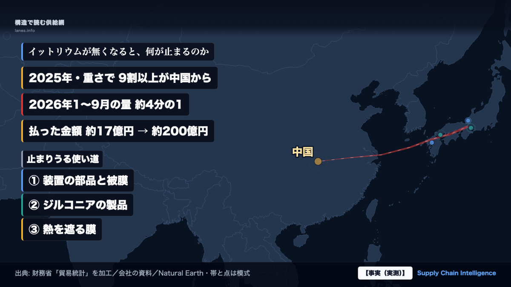
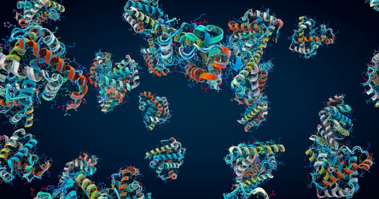
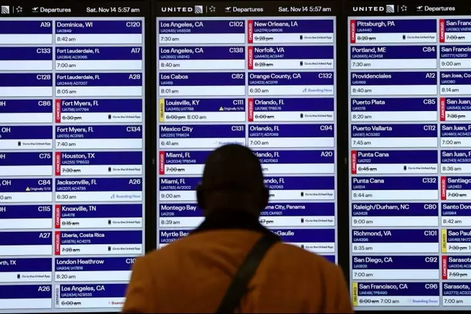

都市部マンション短期売買、利益に課税強化を検討 急落の懸念…投機抑制と市場安定なるか
発行日時：2026-11-15 19:06:26 JST
NewsPicks原文を読む

あなたに関係ありそうな理由
住宅価格や短期転売の動きを、税制と市場の両面から数字で確認できます。不動産の売買や保有に関わる方にとって、購入者の負担と市場安定策の行方を考える材料になります。
概要
政府・与党は、都市部の新築マンションを短期間で売って得る利益への課税を、2027年度税制改正で強める案を検討している。対象として挙がるのは、個人や法人が新築物件を取得から1年以内に売却するケースだ。譲渡益への課税を重くするほか、不動産取得税の負担を増やす案や、現在停止中の土地譲渡益重課制度を復活させる案もある。いずれも検討段階で、最終決定ではない。
背景には、都市部で住宅価格が上昇し、投機的な売買が実需の購入を難しくしているのではないかという懸念がある。東京23区の2025年新築マンション平均価格は1億3613万円で、2020年の約1.8倍になった。自民党の松島みどり氏は、現役世代が住宅を取得しにくくなっていると指摘し、投機目的の短期売買を抑える必要性を訴えている。
短期保有の譲渡益には、すでに別の税負担がある。所有期間が5年以下の場合、所得税や住民税などを合わせた税率は約40％とされる。今回の案は、さらに保有期間が短い新築物件を狙い、取引による利益を小さくする仕組みを想定している。政策の狙いは、価格上昇を見込んだ転売を抑え、購入を希望する人に住宅が届きやすい市場にすることだ。
転売の割合も上昇している。取得から1年以内に売却された新築物件は、2024年に東京23区で9.7％となり、前年の5.7％から増えた。都心6区では12.1％だった。ただし、不動産協会は金利上昇によって市場の過熱感は薄れつつあるとみており、過度な規制が価格の急落を招き、すでに買った人の資産を傷つける可能性を懸念する。転勤などでやむを得ず早く売る人にも負担が及びかねない。課税強化が供給量や販売価格にどう反映されるかは、税率だけでなく対象の定義や導入時期にも左右される。
NewsPicksのコメントでは、バブル期の総量規制と現在のデータ活用を比べ、規制の設計を慎重に考える意見があった。外国人の売買にも規制を求める声も見られたが、これらは読者の見解であり、記事で確認された政策内容とは別だ。年末に向けた税制改正の議論では、短期転売をどこまで対象にするのか、例外をどう設けるのかが焦点になる。抑制効果と住宅価格の安定、必要な売却への影響を合わせて見届けたい。
仕事や会話で使える一言
「転売抑制の効果と、必要な売却まで萎縮させない線引きの両方を見たいですね。」
孫正義氏のタービン巨額投資、裏目に
発行日時：2026-11-15 05:20:00 JST
NewsPicks原文を読む
あなたに関係ありそうな理由
AI向けデータセンターの電力需要を先読みした設備確保と、計画の変更で生じる損失を追えます。大規模投資の前提が変わったときの契約リスクを考える参考になります。
概要
ウォール・ストリート・ジャーナルは、ソフトバンクグループがAI向け電力の確保を急ぎ、発電タービンの大型予約をした後、契約を見直して損失を計上した経緯を報じた。2025年から2026年初めにかけ、GE Vernovaなどに13ギガワットを超える発電能力のタービンを予約した。納入まで数年かかる設備を先に確保し、AIデータセンター向け発電所を早く整える狙いがあった。
予約の背景には、生成AIの普及でデータセンターの電力需要が増えるという見通しがある。タービンの供給は逼迫し、発注から納入まで長期間を要するため、早期に枠を押さえれば将来の建設計画や取引交渉を進めやすい。ソフトバンクグループは返金されない前渡し金を支払い、世界の生産能力の大部分にあたる設備枠を確保した。これは需要が立ち上がる前に供給を確保する賭けでもあった。
具体的な計画の一つが、米オハイオ州で検討された9.2ギガワットの発電所だ。記事は、総額330億ドル規模で日本政府の拠出も含む計画と、隣接地で交渉中の8ギガワットのデータセンター構想を紹介する。タービンを確保していたことは交渉上の利点になった一方、すべての予約がこの発電所計画に必要だったわけではない。会社は想定していた計画全量を実行しないと判断し、余剰分を取り消した。
契約の見直しなどを通じて、ソフトバンクグループには約6000億円の損失が生じたと報じられている。設備枠の予約には返金不可の支払いが含まれ、計画縮小がそのまま損失につながった。先行確保は、供給不足の際に建設機会を逃さないための手段だが、電力需要、建設時期、施設規模の想定が変われば、使わない枠が重荷になる。予約した量の大きさだけで投資の成否を判断できない。
記事は、債務負担やOpenAIへの投資、AI関連投資への過熱感も背景として扱う。イーロン・マスク氏によるソフトバンクグループの債務不履行の主張については、後藤CFOが否定した。NewsPicksのコメントには、供給枠を先に押さえた戦略性を評価する意見と、需要が確定する前の返金不可の支払いを危ぶむ意見があった。いずれも読者の評価であり、報道された事実と区別したい。今後は発電所とデータセンター計画がどこまで実現し、残る予約枠をどう扱うかが注目点だ。
仕事や会話で使える一言
「需要を先取りする投資ほど、予約をどこまで取り消せるかが重要ですね。」
輸入は約4分の1、キロの金額は約44倍――イットリウムで何が止まるか
発行日時：2026-11-15 06:15:37 JST
NewsPicks原文を読む

あなたに関係ありそうな理由
輸入量と通関価格の変化を分けて読み、供給元が偏る素材の影響を考えられます。半導体設備や製造業の調達、在庫の見方にもつながるテーマです。
概要
NewsPicksのデータ記事は、酸化イットリウムを中心に、日本の輸入量と通関申告額の変化を調べている。2025年に日本が輸入したイットリウムは、重さで見ると94.2％が中国由来だった。供給が一つの国に大きく偏っているため、輸出規制や出荷の変化が、素材を使う企業の調達にどう波及するかが問題になる。記事は財務省の貿易統計や企業資料などを使って状況を追っている。
2026年1月から9月までの中国からの輸入量は約294トンで、前年同期のおよそ4分の1に減った。一方、同期間の通関申告額は約17億円から約200億円に増え、1キログラム当たりの申告額は約1600円から約6万8000円へ上がった。計算上は約44倍だが、これは輸入統計に記録された金額と重量から求めた値であり、個別商品の市場価格が44倍になったことを意味しない。
記事は金額の読み方にも注意を促す。通関値は運賃や保険を含む輸入時の申告額で、純度や形状の異なる製品がまとめられている。したがって、前年と今年の数値をそのまま同じ品質の素材の価格比較として扱うことはできない。数量と金額の動きを合わせて見ることで供給の切迫感をつかめる一方、取引価格の変化を確定するには、企業の調達価格や契約条件など別の情報が必要になる。
イットリウムは、半導体製造装置の部品や表面の被膜、ジルコニア製品、ガスタービンの熱を遮る部材などに使われる。中国からの輸入が前年同期から約796トン減ったのに対し、中国以外からの輸入増は13.5トンにとどまる。別の供給先へ切り替えるだけでは量を埋めにくく、材料が不足すれば部品交換や製造ラインの運転に影響する可能性がある。どの用途で代替品を使えるかも、影響の大きさを左右する。
記事は中国の輸出規制や一時停止された別の措置を区別し、企業が持つ在庫と供給回復の時期を今後の焦点に挙げる。表示コメントでは、入荷が途切れた場合の生産リスク、廃材からの回収、調達先の集中度や在庫月数を確かめる必要性が論じられた。これらは読者の見方で、記事が示す貿易統計とは別に扱う。申告額の急上昇だけで実勢価格を断定せず、数量、品質、調達経路、在庫を合わせて見ることが大切だ。
仕事や会話で使える一言
「値上がりだけでなく、何か月分の在庫があり、代替供給がどれだけあるかを見たいですね。」
【新研究】タンパク質の形を捨てたAIーー34億の化合物を1日で探索する
発行日時：2026-11-15 06:00:35 JST
NewsPicks原文を読む

あなたに関係ありそうな理由
創薬候補を広くふるいにかける計算手法の速さと、研究段階で残る確認事項を一緒に読めます。AIの性能値を、実用化の成果と取り違えないための題材です。
概要
NewsPicksの研究紹介は、タンパク質の立体構造を使わず、化合物とタンパク質のアミノ酸配列を共通の空間に埋め込んで相互作用を予測するAI「Ptarmigan-1」を取り上げる。基になったのは、創薬企業Talus Bioscienceの研究者らが発表したbioRxivのプレプリントだ。従来の構造ベースの手法では、結合位置や分子の姿勢を詳しく計算する必要があるが、このモデルは配列と化合物の特徴から候補を素早く順位づけする。
記事によると、研究チームは約34億個の化合物を、2万431種類のヒトタンパク質に対して調べた。計算にはNVIDIAのH100を1基使い、全体を約20時間で処理したと報告されている。膨大な組み合わせを一つずつ精密に計算するのではなく、まず大規模な候補集合から可能性のある化合物を拾うことを目指す。この数字は探索の広さを示し、薬の完成を意味しない。
処理時間の比較では、候補1件のスコア計算にPtarmigan-1は約10ミリ秒、Boltz-2は約54秒を要したと記事は紹介する。単純に割ると約5000倍の速さになる。ただし、比較対象や計算条件は研究の設定に基づく。速く評価できれば、後段で時間のかかる構造解析や実験を行う対象を絞りやすくなる。研究チームは、結合に関わるタンパク質上の残基を特定する機能や、構造データが乏しい標的を扱える点も成果として説明している。
記事は、構造が不明瞭な領域や従来の方法で扱いにくい標的にも候補を広げられる可能性を紹介する。さらにSTAT6をめぐる検証では、ファイザーやRecludix Therapeuticsの特許に記載された化合物群を用い、後から既知の成果をどの程度拾えるかを調べたという。こうした回顧的な評価はモデルの能力を測る材料だが、患者で効く薬を発見した臨床成果とは異なる。候補の予測後には、実際の結合確認、安全性評価、動物や人での試験が必要になる。
Ptarmigan-1は広い探索を高速化し、構造解析や実験に進む対象を絞る前段のフィルターとして提案されている。研究は査読前のプレプリントで、著者にはTalus Bioscienceの社員が含まれ、利益相反も記載されている。コメント欄は表示されたが投稿はなかった。計算とベンチマークの報告を薬の実用化と混同せず、独立した再現や実験で確かめられるかを見たい。
仕事や会話で使える一言
「候補を速く絞れることと、薬として有効だと確かめることは別ですね。」
全米規模の運航停止措置、原因について判明していること
発行日時：2026-11-15 14:15:00 JST
NewsPicks原文を読む

あなたに関係ありそうな理由
通信設備の更新作業が全国の航空便に波及した経緯と、調査中の原因を追えます。複数拠点に依存する設備の切替や、予備系を含む運用設計を考える材料になります。
概要
CNN.co.jpの記事は、米国で起きた全米規模の航空機地上待機措置について、発生時点で分かっている原因や影響を整理する。連邦航空局（FAA）の通信システムに障害が起き、航空便の出発が数時間にわたって止まった。きっかけとして説明されたのは、古い銅線の通信回線を光ファイバーへ切り替える保守作業だ。障害は復旧したものの、作業ミスだったのか、機器の故障だったのかは調査が続いていた。
ショーン・ダフィー運輸長官は、FAAの遠隔施設の一つで請負業者L3ハリスが定期的な回線更新をしていたと説明し、作業中に同社のミスがあった可能性を示した。一方、記事は、切替時に業者が誤ったのか、機器自体に問題が生じたのか、当時は判然としないと明記する。L3ハリスもFAAと協力して調査すると述べた。発言者の見立てと、確定した技術的原因を混ぜないことが重要だ。
FAAのベッドフォード長官によると、全22カ所の航空管制センターのうち最大17カ所が影響を受けた。ただし、どの施設も完全な機能停止には至らなかった。複数施設から無線周波数が途切れるとの報告があり、そのたびに主系から予備系への切替が必要になった。影響の広がりをすぐに特定できず、FAAは全国的な地上待機に踏み切った。個別の設備の不具合が、共通の通信網を通じて広域の運航判断へ波及した形だ。
当局者は、サイバー攻撃など悪意ある活動を示す証拠はなく、AIが関係した証拠もないと説明した。これは会見での当局者の説明であり、作業と機器のどちらが原因かは別に調べられている。古い銅線の約30％はまだ光ファイバーへ置き換えられていないとも報じられた。設備更新が続く間、切替の安全性、障害検知、主系と予備系の運用をどう保つかが、再発防止に関わる課題になる。
11月14日には、午後1時時点で5000便以上が欠航し、米国内または米国発着の4400便以上に遅延が出たと記事は伝える。旅行客の列や予定変更も続き、ダフィー長官は議会に運輸省への追加投資を求めた。NewsPicksの表示コメントでは、通信障害が遅延を連鎖させる影響や、バックアップ設備とリスク管理のあり方が論じられた。コメントは読者の分析として扱い、記事が確認した便数や会見内容とは区別する。今後は調査結果と残る設備更新の計画が注目点だ。
仕事や会話で使える一言
「切替作業の手順だけでなく、予備系へ移る条件と影響範囲も確かめたいですね。」